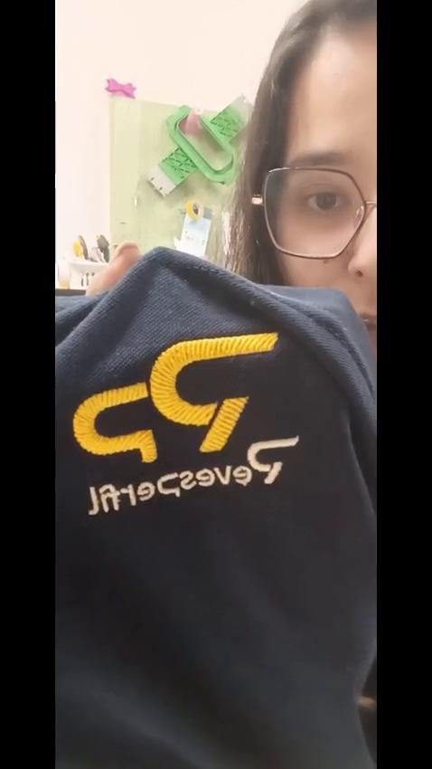

Os primeiros passos
O início de um percurso.
PARTILHADO NO DEPOIMENTO
Exemplos mostrados pela aluna
no seu testemunho.
A prática faz parte do percurso.


WILCOM ACADEMY COMPLETA
Todas as formações.
Um percurso completo.
OFERTA DO DIRETO · 20 VAGAS
Separadamente 941 €
Uma diferença de 441,01 €.

Lê o QR ou acede ao link
partilhado no chat.